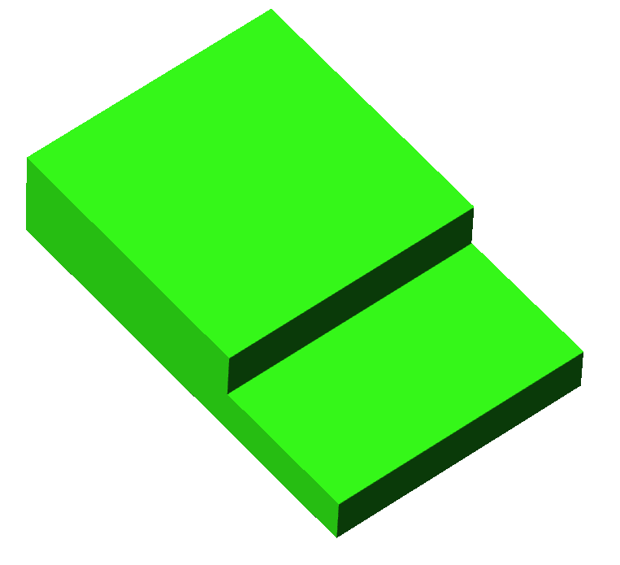
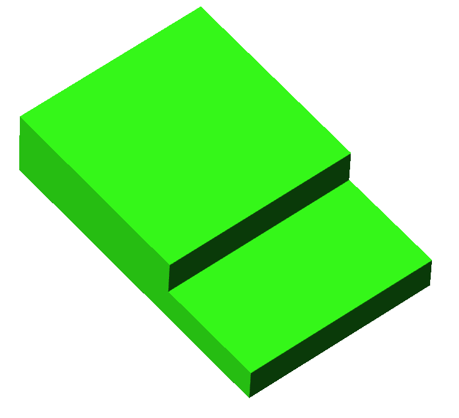

以前、TTM4というCPUを設計、製作いたしまして恐縮ながらスイッチサイエンスさんで委託販売させて頂きました。趣味の延長で創ったものでしたが、(もちろん販売すると決めた時から販売用に設計しています。)予想以上に好評頂きました。自作CPUというと電子工作というよりかは情報系の工作のテーマの一つという側面が強くて、実際やってみるとしたらパソコン上でシミュレーションでやってみるか、もしくはFPGA上で再現すると思います。ロジックICやトランジスタで創る事は電子工作をかじっている人なら思いつきはするでしょうが、ちょっと考えれば現実的ではないという事にすぐに気づきます。そこには圧倒的な物量の作業が待っているのです。実際にやる人はロマンを求める戦士です。私と同じような戦士が必ず存在しているはずであると考えた結果、必ずニッチな需要はあると踏んで販売することにしたのです。TTM4の販売を通して、確実に需要があると分かりました。そしてそれは予想より遥かに多いです。ならばTTM4だけでは終わらさず前作の反省を踏まえて、より練度の高いCPUを設計、販売したいという気持ちになり次なるCPUを設計することに決めたのです。
TTM4の設計思想はこんな感じです。
どれも間違ったコンセプトではなかったと思っておりますが最初は趣味からの延長というのもあり、コンセプトに乱れが生じた点があったと反省しております。「ある程度電子工作やったことある人向け」とありますが、これは中途半端に初心者にも向けた設計になってしまっていたりします。けれど説明書では初心者には理解が難しい所がある感じになってしまっていたりしました。要するに「ある程度電子工作やったことある人向け」というのはすごく大雑把なくくりで一体全体具体的には誰対象なのか分かってなかったのですね。その辺をしっかり決めずにお客様のイメージができてなかったと反省しております。逆にその他のコンセプトは良かったと思います。「自作CPUロジックIC部門というニッチな需要」は上でも書いたように、わざわざ苦行を強いられるハードウェアでの自作CPUをしたいという層が私と同じように必ず存在しているが、いざやるとなると圧倒的な物量によるハードルが高いので、そのとっかかりを作ってあげられる。という確実な需要があると踏みました。さらに自作CPUキットは世に出ている電子工作キットの中では極僅かな分野でオンリーワンとは言わないまでもかなり独自性のあるキットになると思います。NANDとかXORとか知らない一般人でもLEDとかトランジスタは何かは分からなくても言葉は知っていると思います。CPUもそれです。CPUがパソコンの頭である何かまではほとんどの人は知っているのです。だから自作CPUキットは、実際やらないまでも多くの人の目に留まりやすく買ってくれる人に出会いやすい製品だと思います。「大きすぎないコンパクト、てのひらサイズ!!」は良いコンセプトでした。自作CPUキットはその特性上部品数が必然的に多くなり、どうしても基板が大きくなってしまいがちなのですが初見のお客様にでかすぎて謙遜されてしまう可能性を感じました。なのでTTM4はコンパクトにしました。なんと片手で持てます!そのために二階建てにするとか無理もしましたが結果独特な形にもなったし片手で持てるし良かったです。TTM4はある程度電子工作経験がありかつ、自作CPUは初めての人向けです。ある程度は始めやすいキットになっていると思います。「チカチカ祭り、煌びやかに光る!」、これはハードウェアによる自作CPUでは必然的にこうなりますね。ソフト的な自作CPUではできない点だと思います。内部のバスやレジスタ全部にLEDをぶら下げてビカビカ光らせるととっても嬉しいです。お客様にとっても完成した成果が分かりやすくて良いと思います。TTM4はチカチカ祭りの略ですね。
さて、TTM4について反省したので次なるCPUのコンセプトを考えます。まず最も反省しなければならない点はターゲットが「ある程度電子工作やったことある人向け」という大雑把なくくりであった事です。次なるCPUではお客様のビジョンを明確にします。ターゲットを絞るのではなく、はっきりビジョンを思い浮べたお客様に対して最適なCPUとなるように設計します。メインターゲットは、「今までモノづくりの経験があり、自作CPUという未体験ゾーンに踏み込もうという気合のある方」です。製品の性質上情報系の方にも需要がる製品だと思いますので、電子工作が初めてという方でも大丈夫なように設計したいと思っております。(表面実装廃止、部品の向きとか説明書に書く)ソフトだけでなくハードでもCPUをこしらえもらえて、そこから電子工作沼にハマれば良いです。CPUの仕組みの勉強用教材になれば幸せです。そして自作CPUやロジックICでの工作を経験した事ある方にもお勧めできる満足いく製品に仕上げたいと思っております。カスタマイズしようと思ったら幅広く対応できるような感じですかね。
「大きすぎないコンパクト、てのひらサイズ!!」というコンセプトはTTM4の意思を受け継ぐつもりでなんとかして果たしたいです。ただし実際にどうなるかは現段階では分からないです。TTM4では二階建てにして手のひらサイズを実現しましたが、二階建て構造には欠点が何個かあります。基板を二枚に分ける事で基板二枚めんどう見なければならないので大変です。二階建ての一階部分はインターフェイス(LEDとかスイッチ)を置けないので配線に無理が生じます。なのでできれば二階建て構造は止めたいと考えておりますが、このおかげでTTM4では独特のフォルムを形成できた面もあります。悩みどころです。「チカチカ祭り、煌びやかに光る!」は必然的にそうなりますね。せっかくロジックICで創るなら光らせない理由はありません。
 

前作TTM4の名前を受けつくのであればTTM8となると思うのですが、今回のCPUは大幅に仕様変更するので名前は変えるかもしれません。とりあえず開発中はTTM8としておきますが、もっと良い名前が思いつけば変えると思います。